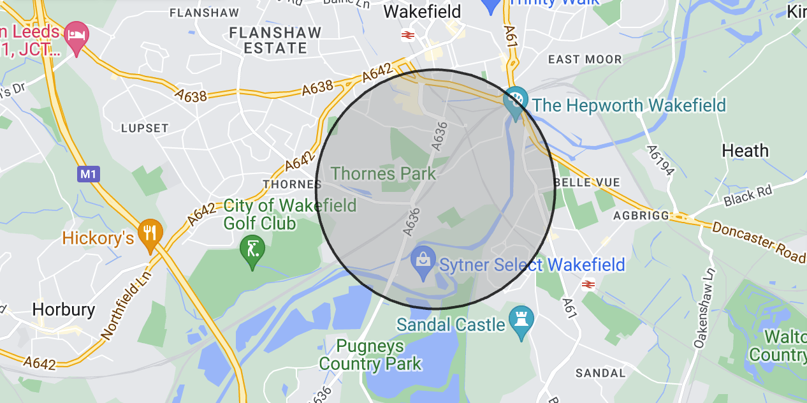
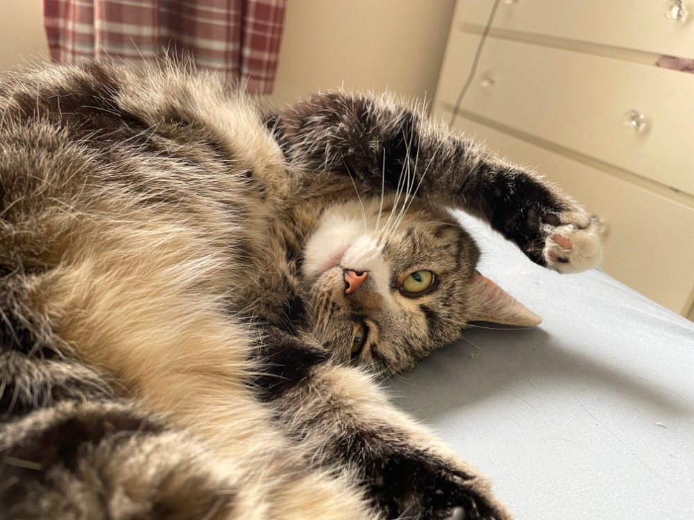
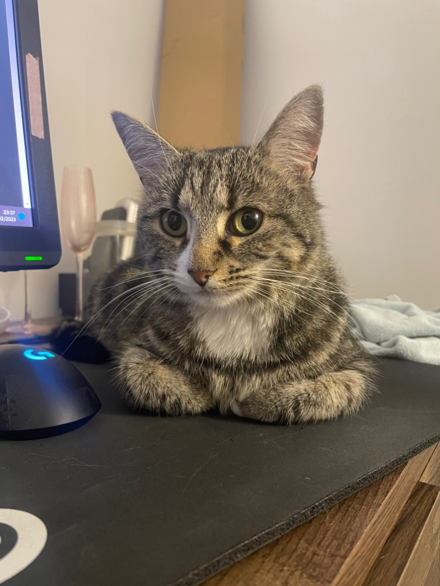
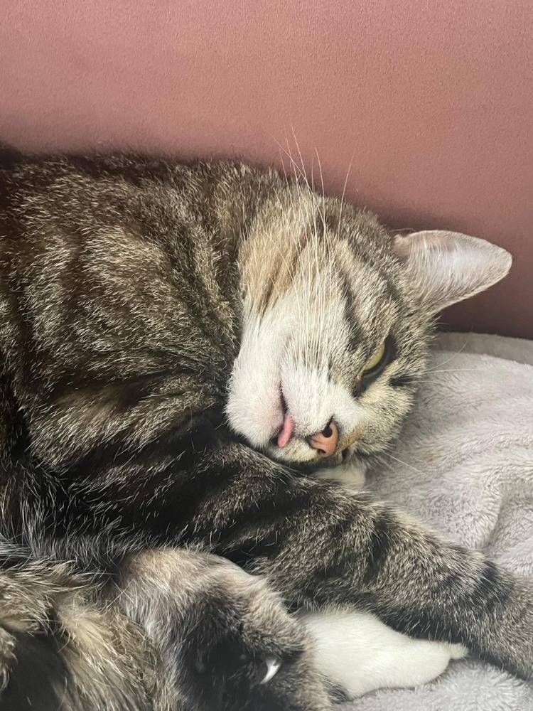
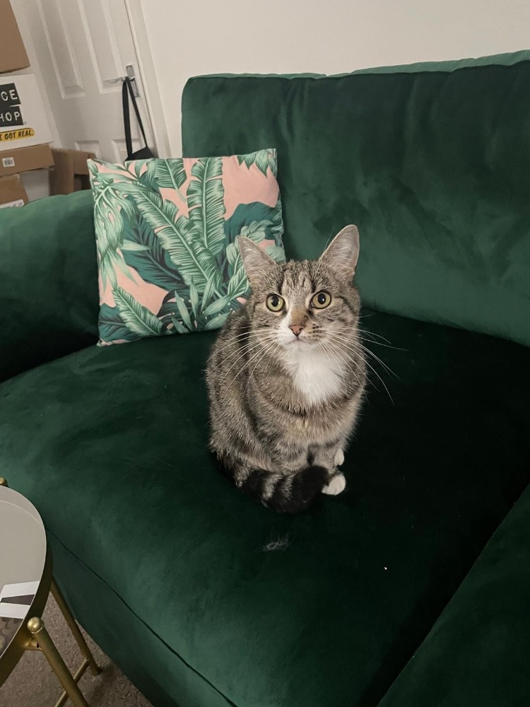
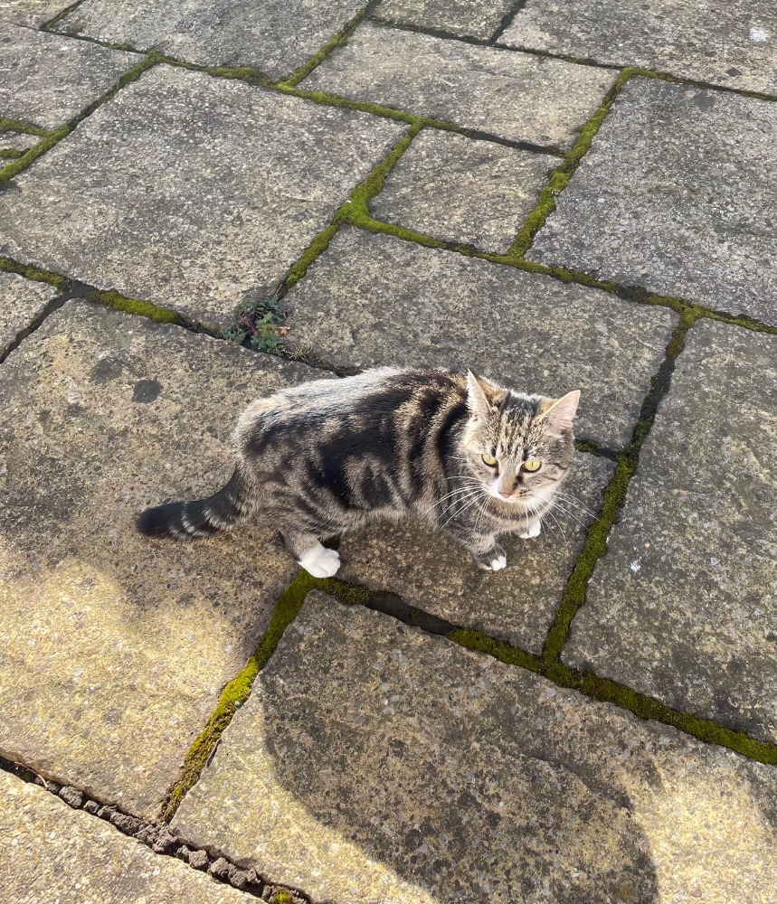

This is Clawdia (no, I didn't spell that incorrectly).
She unfortunately went missing on Sunday the 20th of July, 2024, in the Thornes Area of Wakefield, West Yorkshire.

Here's an idea of where she went missing. We'd like to think that she would still be in this radius, albeit a bit lost - but she is known to be quite adventurous.
Here's what you need to know:
Clawdia is a tabby cat.
Clawdia is 10 years old.
Clawdia is microchipped, and neutered.
Clawdia is very timid.
Her timidness is no match for her hunger - she will like you if you have food.
She has white socks (her paws are white).
She has a broken bottom right canine (from fighting other cats, presumably - she's fine).
Here's some more pictures:

We love and miss her.

Here's a better picture of her face - note the white under on her nose. Not a lot of tabby cats have this!

She's a bit silly, and sleeps with her tongue out.


Clawdia.
Have you seen her?
Please contact me at alexwebster1999@icloud.com if you think you've spotted her. It would be handy if you could leave any contact details (such as telephone number), so I can give you a quick call.